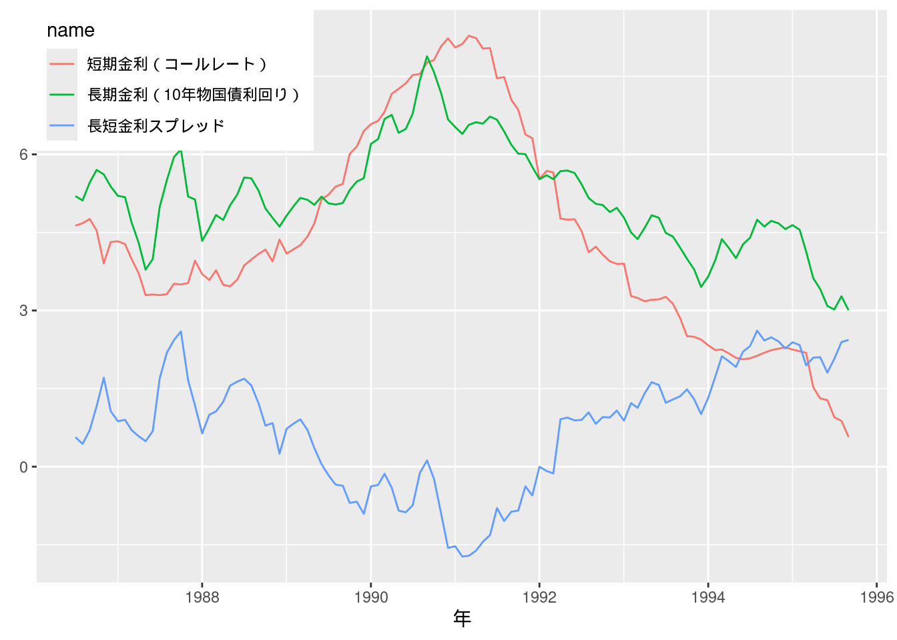
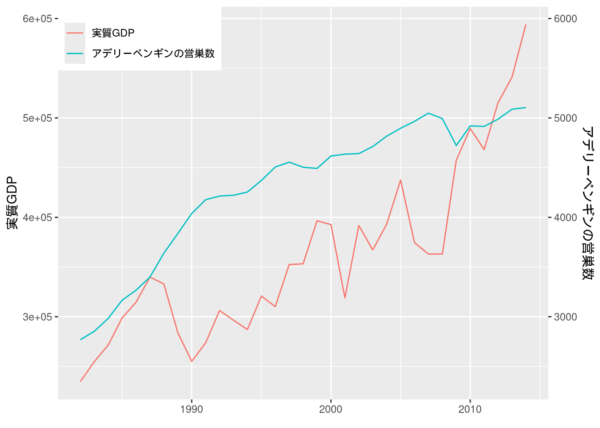
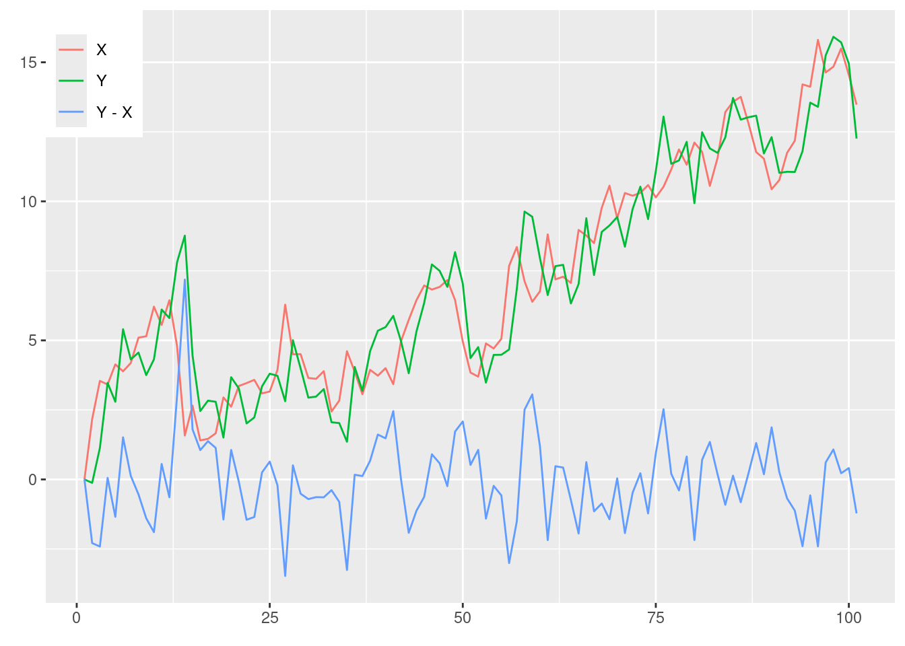
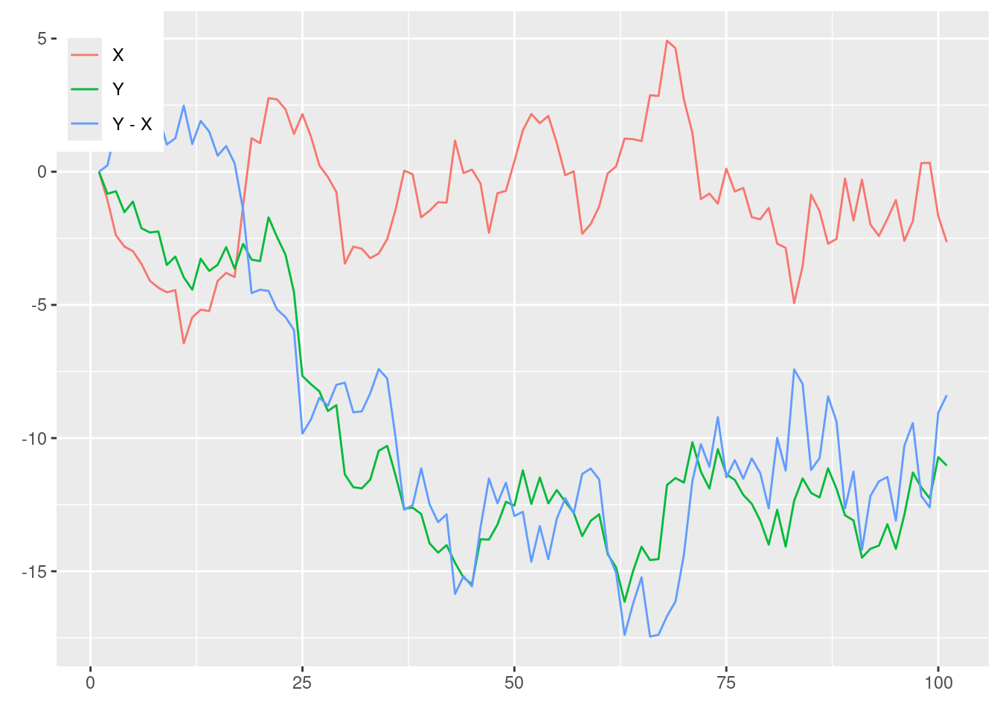

第12章 VARモデル
先に出版社サイトよりデータをダウンロードする.
# サポートファイルへのリンク
curl <- "https://www.yuhikaku.co.jp/static_files/05385_support12.zip"
# ダウンロード保存用フォルダが存在しない場合, 作成
if(!dir.exists("downloads")){
dir.create("downloads")
}
cdestfile <- "downloads/support12.zip"
download.file(curl, cdestfile)
# データ保存用フォルダが存在しない場合, 作成
if(!dir.exists("data")){
dir.create("data")
}
# WSL上のRで解凍すると文字化けするので、Linuxのコマンドを外部呼び出し
# Windowsの場合は別途コマンドを用いる.
if(.Platform$OS.type == "unix") {
system(sprintf('unzip -n -Ocp932 %s -d %s', "downloads/support12.zip", "./data"))
} else {
print("Windowsで解凍するコマンドを別途追加せよ.")
}必要なライブラリを読み込む.
library(tidyverse)
library(readxl)
# library(estatapi)
# library(hpfilter)
library(urca)
# library(tsm)
# library(fredr)
# library(modelsummary)
library(vars)## Loading required package: strucchange##
## Attaching package: 'strucchange'## The following object is masked from 'package:stringr':
##
## boundary##
## Attaching package: 'vars'## The following object is masked from 'package:tidyquant':
##
## VAR図12-1 短期金利と長期金利 (月次データ)
Excelファイルを読み込んで, ggplotでグラフを描画する. ついでにこれらのデータの単位根の有無をADF検定を行って検証しよう.
Fig_1_longshortspread <- read_excel("data/12_第12章/Fig_1_longshortspread.xlsx")
Fig_1_longshortspread %>%
mutate(year = ym(year)) %>%
pivot_longer(cols = c("短期金利（コールレート）", "長期金利（10年物国債利回り）", "長短金利スプレッド")) %>%
ggplot(aes(x = year, y = value, color = name)) +
geom_line() +
labs(x = "年", y = element_blank()) +
theme(legend.position = c(0, 1), legend.justification = c(0, 1))
# 金利データの単位根仮説をADF検定で検証する.
ur.df(Fig_1_longshortspread$`短期金利（コールレート）`, type = "none", selectlags = "BIC", lags = 12) %>% summary()##
## ###############################################
## # Augmented Dickey-Fuller Test Unit Root Test #
## ###############################################
##
## Test regression none
##
##
## Call:
## lm(formula = z.diff ~ z.lag.1 - 1 + z.diff.lag)
##
## Residuals:
## Min 1Q Median 3Q Max
## -0.64175 -0.06502 0.03139 0.11778 0.43751
##
## Coefficients:
## Estimate Std. Error t value Pr(>|t|)
## z.lag.1 -0.003445 0.004449 -0.774 0.440708
## z.diff.lag1 -0.067028 0.101101 -0.663 0.508982
## z.diff.lag2 0.212236 0.094476 2.246 0.027042 *
## z.diff.lag3 0.350114 0.094067 3.722 0.000338 ***
## z.diff.lag4 0.213497 0.099975 2.135 0.035348 *
## ---
## Signif. codes: 0 '***' 0.001 '**' 0.01 '*' 0.05 '.' 0.1 ' ' 1
##
## Residual standard error: 0.2169 on 93 degrees of freedom
## Multiple R-squared: 0.2653, Adjusted R-squared: 0.2258
## F-statistic: 6.717 on 5 and 93 DF, p-value: 2.196e-05
##
##
## Value of test-statistic is: -0.7743
##
## Critical values for test statistics:
## 1pct 5pct 10pct
## tau1 -2.58 -1.95 -1.62ur.df(Fig_1_longshortspread$`長期金利（10年物国債利回り）`, type = "none", selectlags = "BIC", lags = 12) %>% summary()##
## ###############################################
## # Augmented Dickey-Fuller Test Unit Root Test #
## ###############################################
##
## Test regression none
##
##
## Call:
## lm(formula = z.diff ~ z.lag.1 - 1 + z.diff.lag)
##
## Residuals:
## Min 1Q Median 3Q Max
## -0.65136 -0.16450 0.01044 0.12222 0.68789
##
## Coefficients:
## Estimate Std. Error t value Pr(>|t|)
## z.lag.1 -0.004023 0.004471 -0.900 0.37060
## z.diff.lag1 0.298045 0.096944 3.074 0.00278 **
## z.diff.lag2 0.190889 0.096777 1.972 0.05156 .
## z.diff.lag3 -0.173768 0.093855 -1.851 0.06731 .
## z.diff.lag4 -0.316452 0.095376 -3.318 0.00130 **
## z.diff.lag5 0.213862 0.094863 2.254 0.02654 *
## ---
## Signif. codes: 0 '***' 0.001 '**' 0.01 '*' 0.05 '.' 0.1 ' ' 1
##
## Residual standard error: 0.2351 on 92 degrees of freedom
## Multiple R-squared: 0.2959, Adjusted R-squared: 0.25
## F-statistic: 6.443 on 6 and 92 DF, p-value: 1.072e-05
##
##
## Value of test-statistic is: -0.8998
##
## Critical values for test statistics:
## 1pct 5pct 10pct
## tau1 -2.58 -1.95 -1.62urca::ur.df()で情報基準により自動的にラグ次数を選択するには, lags引数にラグの最大値を指定して, selectlags引数に用いたい情報基準(AICかBIC)を選択する.
短期金利と長期金利両者ともに著者らの分析通り, 単位根仮説は棄却されない結果となった.
実証例12.1 金利の期間構造とグレンジャー因果性
RにおいてVARモデルはvarsパッケージによって実装されている.
まずラグ次数の選択をvars::VARselect()により行う.
data_ex12.1 <- Fig_1_longshortspread %>%
mutate(`短期金利（コールレート）_delta` = `短期金利（コールレート）` - lag(`短期金利（コールレート）`)) %>%
dplyr::select(`短期金利（コールレート）_delta`, 長短金利スプレッド) %>%
filter(!is.na(`短期金利（コールレート）_delta`))
VARselect(data_ex12.1, type = "const")## $selection
## AIC(n) HQ(n) SC(n) FPE(n)
## 7 4 4 7
##
## $criteria
## 1 2 3 4 5
## AIC(n) -5.317777655 -5.481275149 -5.550500437 -5.702062904 -5.723977661
## HQ(n) -5.254516100 -5.375839223 -5.402890142 -5.512278238 -5.492018625
## SC(n) -5.161467444 -5.220758130 -5.185776611 -5.233132270 -5.150840220
## FPE(n) 0.004903816 0.004164712 0.003887295 0.003342333 0.003272536
## 6 7 8 9 10
## AIC(n) -5.753368894 -5.771554115 -5.728072747 -5.663724846 -5.601100587
## HQ(n) -5.479235489 -5.455246339 -5.369590602 -5.263068330 -5.158269702
## SC(n) -5.076024646 -4.990003059 -4.842314884 -4.673760175 -4.506929109
## FPE(n) 0.003181478 0.003129155 0.003275103 0.003502157 0.003740952VARselect()ではAIC, Hannan-Quinn Criterion (HQ), Schwarz Criterion (SC, BICのこと), Final Prediction Error Criterion (FPE)の4種類の情報基準が示される.
著者らの分析通り, BICではラグ次数4が選択された.
model_ex12.1 <- VAR(data_ex12.1, p = 4, type = "const")
causality(model_ex12.1, cause = "長短金利スプレッド")## $Granger
##
## Granger causality H0: 長短金利スプレッド do not Granger-cause
## 短期金利.コールレート._delta
##
## data: VAR object model_ex12.1
## F-Test = 3.0461, df1 = 4, df2 = 194, p-value = 0.01829
##
##
## $Instant
##
## H0: No instantaneous causality between: 長短金利スプレッド and
## 短期金利.コールレート._delta
##
## data: VAR object model_ex12.1
## Chi-squared = 16.964, df = 1, p-value = 3.81e-05こちらも著者らの分析通り, 5%有意水準で帰無仮説が棄却され (\(p = 0.01829\)), スプレッドがコールレートに対してグレンジャー因果性をもつことが示唆された.
実証例12.2 金利の期間構造とシムズの因果性検定
単純にlm()関数でOLS推定を行ったあと, ラグ次数4を用いたHAC標準誤差をNeweyWest()で計算し, 結果をcoeftest()で表示する.
model_ex12.2 <- lm(長短金利スプレッド ~ lead(`短期金利（コールレート）_delta`) + `短期金利（コールレート）_delta` + lag(`短期金利（コールレート）_delta`) + lag(`短期金利（コールレート）_delta`, 2) + lag(`短期金利（コールレート）_delta`, 3) + lag(`短期金利（コールレート）_delta`, 4) + lag(`短期金利（コールレート）_delta`, 5) + lag(`短期金利（コールレート）_delta`, 6), data = data_ex12.1)
coeftest(model_ex12.2, NeweyWest(model_ex12.2, lag = 4))##
## t test of coefficients:
##
## Estimate Std. Error t value Pr(>|t|)
## (Intercept) 0.668888 0.490634 1.3633 0.1760406
## lead(`短期金利（コールレート）_delta`) 1.027550 0.593169 1.7323 0.0864991
## `短期金利（コールレート）_delta` 0.443399 0.578951 0.7659 0.4456750
## lag(`短期金利（コールレート）_delta`) 0.058577 0.514292 0.1139 0.9095617
## lag(`短期金利（コールレート）_delta`, 2) -0.205387 0.375925 -0.5464 0.5861180
## lag(`短期金利（コールレート）_delta`, 3) -0.724291 0.251007 -2.8855 0.0048460
## lag(`短期金利（コールレート）_delta`, 4) -1.053343 0.264109 -3.9883 0.0001316
## lag(`短期金利（コールレート）_delta`, 5) -1.259267 0.346259 -3.6368 0.0004506
## lag(`短期金利（コールレート）_delta`, 6) -1.148366 0.320260 -3.5857 0.0005355
##
## (Intercept)
## lead(`短期金利（コールレート）_delta`) .
## `短期金利（コールレート）_delta`
## lag(`短期金利（コールレート）_delta`)
## lag(`短期金利（コールレート）_delta`, 2)
## lag(`短期金利（コールレート）_delta`, 3) **
## lag(`短期金利（コールレート）_delta`, 4) ***
## lag(`短期金利（コールレート）_delta`, 5) ***
## lag(`短期金利（コールレート）_delta`, 6) ***
## ---
## Signif. codes: 0 '***' 0.001 '**' 0.01 '*' 0.05 '.' 0.1 ' ' 1リード変数の\(p\)-値をみると, 10%水準では帰無仮説が棄却できるが, 5%水準では棄却できない結果となった.
実証例12.3 南極のペンギンの数と日本のGDP
Excelファイルを読み込んで単回帰でOLS推定を行い, またそれぞれの変数についてADF検定も実行する.
## New names:
## • `` -> `...1`model_ex12.3 <- lm_robust(実質GDP ~ アデリーペンギンの営巣数, data = Fig_2_penguin, se_type = "HC1")
summary(model_ex12.3)##
## Call:
## lm_robust(formula = 実質GDP ~ アデリーペンギンの営巣数,
## data = Fig_2_penguin, se_type = "HC1")
##
## Standard error type: HC1
##
## Coefficients:
## Estimate Std. Error t value Pr(>|t|) CI Lower
## (Intercept) 223192.21 39866.693 5.598 3.862e-06 141883.55
## アデリーペンギンの営巣数 57.45 9.749 5.893 1.664e-06 37.57
## CI Upper DF
## (Intercept) 304500.87 31
## アデリーペンギンの営巣数 77.34 31
##
## Multiple R-squared: 0.5178 , Adjusted R-squared: 0.5022
## F-statistic: 34.73 on 1 and 31 DF, p-value: 1.664e-06##
## ###############################################
## # Augmented Dickey-Fuller Test Unit Root Test #
## ###############################################
##
## Test regression trend
##
##
## Call:
## lm(formula = z.diff ~ z.lag.1 + 1 + tt)
##
## Residuals:
## Min 1Q Median 3Q Max
## -29784.9 -4777.9 660.3 5961.9 14022.9
##
## Coefficients:
## Estimate Std. Error t value Pr(>|t|)
## (Intercept) 4.715e+04 1.998e+04 2.360 0.0252 *
## z.lag.1 -1.028e-01 6.269e-02 -1.640 0.1119
## tt 2.557e+02 4.634e+02 0.552 0.5854
## ---
## Signif. codes: 0 '***' 0.001 '**' 0.01 '*' 0.05 '.' 0.1 ' ' 1
##
## Residual standard error: 8623 on 29 degrees of freedom
## Multiple R-squared: 0.2613, Adjusted R-squared: 0.2104
## F-statistic: 5.129 on 2 and 29 DF, p-value: 0.01238
##
##
## Value of test-statistic is: -1.6395 11.0624 5.1294
##
## Critical values for test statistics:
## 1pct 5pct 10pct
## tau3 -4.15 -3.50 -3.18
## phi2 7.02 5.13 4.31
## phi3 9.31 6.73 5.61##
## ###############################################
## # Augmented Dickey-Fuller Test Unit Root Test #
## ###############################################
##
## Test regression drift
##
##
## Call:
## lm(formula = z.diff ~ z.lag.1 + 1)
##
## Residuals:
## Min 1Q Median 3Q Max
## -844.85 -216.20 55.37 216.17 832.28
##
## Coefficients:
## Estimate Std. Error t value Pr(>|t|)
## (Intercept) 144.48628 313.51853 0.461 0.648
## z.lag.1 -0.00907 0.08634 -0.105 0.917
##
## Residual standard error: 374.9 on 30 degrees of freedom
## Multiple R-squared: 0.0003677, Adjusted R-squared: -0.03295
## F-statistic: 0.01103 on 1 and 30 DF, p-value: 0.917
##
##
## Value of test-statistic is: -0.105 1.4409
##
## Critical values for test statistics:
## 1pct 5pct 10pct
## tau2 -3.58 -2.93 -2.60
## phi1 7.06 4.86 3.94図12-2 GDPとペンギンの数
異なるデータを同じ図にプロットするために, 先にアデリーペンギンの営巣数の数値をスケールした(参考).
Fig_2_penguin %>%
mutate(アデリーペンギンの営巣数 = アデリーペンギンの営巣数 * 600000 / 6000) %>% # 両軸表示用にスケール
pivot_longer(cols = c("実質GDP", "アデリーペンギンの営巣数")) %>%
ggplot(aes(x = ...1, y = value, colour = name)) +
geom_line() +
scale_y_continuous(sec.axis = sec_axis(~./600000 * 6000, name = "アデリーペンギンの営巣数")) +
scale_color_hue(name = element_blank(), labels = c("実質GDP", "アデリーペンギンの営巣数")) +
labs(x = element_blank(), y = "実質GDP") +
theme(legend.position = c(0, 1), legend.justification = c(0, 1))
図12-3 実験系列 (共和分)
Rでそれぞれ100個ずつ正規分布乱数を生成し, これをもとに\(X_t, Y_t\)の挙動をシミュレーションする.
# 再現性のために任意のシード値を設定
set.seed(634)
# 200個の正規分布乱数を生成 (系列相関なし)
data_fig12_3 <- data.frame(eps_1 = c(0, rnorm(100)), eps_2 = c(0, rnorm(100)))
X = c(0)
Y = c(0)
for (i in 2:101) {
X = c(X, X[i-1] + data_fig12_3$eps_2[i])
Y = c(Y, 0.5 * Y[i-1] + 0.5 * X[i-1] + data_fig12_3$eps_1[i])
}
data_fig12_3 %>%
mutate(X = X, Y = Y, index = 1:101) %>%
mutate(`Y - X` = Y - X) %>%
pivot_longer(cols = c("X", "Y", "Y - X")) %>%
ggplot(aes(x = index, y = value, colour = name)) +
geom_line() +
scale_color_hue(name = element_blank(), labels = c("X", "Y", "Y - X")) +
labs(x = element_blank(), y = element_blank()) +
theme(legend.position = c(0, 1), legend.justification = c(0, 1))
図12-4 実験系列 (見せかけの相関)
図12-3と同様にシミュレーションしてみよう.
# 再現性のために任意のシード値を設定
set.seed(63400)
# 200個の正規分布乱数を生成 (系列相関なし)
data_fig12_4 <- data.frame(eps_1 = c(0, rnorm(100)), eps_2 = c(0, rnorm(100)))
X = c(0)
Y = c(0)
for (i in 2:101) {
X = c(X, X[i-1] + data_fig12_4$eps_2[i])
Y = c(Y, Y[i-1] + data_fig12_4$eps_1[i])
}
data_fig12_4 %>%
mutate(X = X, Y = Y, index = 1:101) %>%
mutate(`Y - X` = Y - X) %>%
pivot_longer(cols = c("X", "Y", "Y - X")) %>%
ggplot(aes(x = index, y = value, colour = name)) +
geom_line() +
scale_color_hue(name = element_blank(), labels = c("X", "Y", "Y - X")) +
labs(x = element_blank(), y = element_blank()) +
theme(legend.position = c(0, 1), legend.justification = c(0, 1))
実証例12.4 金利の期間構造と共和分
model_ex12.4 <- lm_robust(`長期金利（10年物国債利回り）` ~ `短期金利（コールレート）`, se_type = "HC1", data = Fig_1_longshortspread)
summary(model_ex12.4)##
## Call:
## lm_robust(formula = `長期金利（10年物国債利回り）` ~
## `短期金利（コールレート）`, data = Fig_1_longshortspread,
## se_type = "HC1")
##
## Standard error type: HC1
##
## Coefficients:
## Estimate Std. Error t value Pr(>|t|) CI Lower
## (Intercept) 3.1418 0.10350 30.36 5.409e-55 2.9367
## `短期金利（コールレート）` 0.4602 0.02138 21.53 4.691e-41 0.4178
## CI Upper DF
## (Intercept) 3.3470 109
## `短期金利（コールレート）` 0.5025 109
##
## Multiple R-squared: 0.8223 , Adjusted R-squared: 0.8207
## F-statistic: 463.4 on 1 and 109 DF, p-value: < 2.2e-16# 残差をADF検定
model_ex12.4$residuals <- Fig_1_longshortspread$`長期金利（10年物国債利回り）` - model_ex12.4$fitted.values
ur.df(model_ex12.4$residuals, type = "none", lags = 8, selectlags = "BIC") %>% summary()##
## ###############################################
## # Augmented Dickey-Fuller Test Unit Root Test #
## ###############################################
##
## Test regression none
##
##
## Call:
## lm(formula = z.diff ~ z.lag.1 - 1 + z.diff.lag)
##
## Residuals:
## Min 1Q Median 3Q Max
## -0.54868 -0.15556 -0.03448 0.12935 0.73874
##
## Coefficients:
## Estimate Std. Error t value Pr(>|t|)
## z.lag.1 -0.39066 0.06508 -6.003 3.20e-08 ***
## z.diff.lag1 0.41732 0.08750 4.769 6.37e-06 ***
## z.diff.lag2 0.25134 0.09844 2.553 0.0122 *
## ---
## Signif. codes: 0 '***' 0.001 '**' 0.01 '*' 0.05 '.' 0.1 ' ' 1
##
## Residual standard error: 0.2316 on 99 degrees of freedom
## Multiple R-squared: 0.3327, Adjusted R-squared: 0.3125
## F-statistic: 16.46 on 3 and 99 DF, p-value: 9.44e-09
##
##
## Value of test-statistic is: -6.003
##
## Critical values for test statistics:
## 1pct 5pct 10pct
## tau1 -2.58 -1.95 -1.62実証例12.5 南極のペンギンの数と日本の GDP （再考）
model_ex12.3$residuals <- Fig_2_penguin$実質GDP - model_ex12.3$fitted.values
ur.df(model_ex12.3$residuals, type = "none", lags = 8, selectlags = "BIC") %>% summary()##
## ###############################################
## # Augmented Dickey-Fuller Test Unit Root Test #
## ###############################################
##
## Test regression none
##
##
## Call:
## lm(formula = z.diff ~ z.lag.1 - 1 + z.diff.lag)
##
## Residuals:
## Min 1Q Median 3Q Max
## -65963 -10067 2921 13895 47616
##
## Coefficients:
## Estimate Std. Error t value Pr(>|t|)
## z.lag.1 -0.22973 0.15961 -1.439 0.164
## z.diff.lag -0.03343 0.21488 -0.156 0.878
##
## Residual standard error: 25960 on 22 degrees of freedom
## Multiple R-squared: 0.108, Adjusted R-squared: 0.02688
## F-statistic: 1.331 on 2 and 22 DF, p-value: 0.2845
##
##
## Value of test-statistic is: -1.4393
##
## Critical values for test statistics:
## 1pct 5pct 10pct
## tau1 -2.62 -1.95 -1.61実証例12.6 金利の期間構造と誤差修正モデル
Rでは誤差修正モデルはurca::ca.jo()関数を用いてモデルを作成したのち, urca::cajorls()によって推定できる.
推定結果の表示には自由度修正ホワイト標準誤差を用いるため, vcov(type = "HC1")とし, coeftest()を利用した.
data_ex12.6 <- Fig_1_longshortspread %>%
dplyr::select(`長期金利（10年物国債利回り）`, `短期金利（コールレート）`)
z <- ca.jo(data_ex12.6, ecdet = "none", K = 3, spec = "transitory")
model_ex12.6 <- cajorls(z)$rlm
coeftest(model_ex12.6, vcov = vcovHC(model_ex12.6, type = "HC1"))##
## t test of coefficients:
##
## Estimate
## 長期金利.10年物国債利回り..d:ect1 -0.372652
## 長期金利.10年物国債利回り..d:constant 1.180830
## 長期金利.10年物国債利回り..d:長期金利.10年物国債利回り..dl1 0.492299
## 長期金利.10年物国債利回り..d:短期金利.コールレート..dl1 -0.052556
## 長期金利.10年物国債利回り..d:長期金利.10年物国債利回り..dl2 0.231438
## 長期金利.10年物国債利回り..d:短期金利.コールレート..dl2 0.033011
## 短期金利.コールレート..d:ect1 0.070754
## 短期金利.コールレート..d:constant -0.253916
## 短期金利.コールレート..d:長期金利.10年物国債利回り..dl1 0.096943
## 短期金利.コールレート..d:短期金利.コールレート..dl1 0.052543
## 短期金利.コールレート..d:長期金利.10年物国債利回り..dl2 0.010640
## 短期金利.コールレート..d:短期金利.コールレート..dl2 0.214962
## Std. Error t value
## 長期金利.10年物国債利回り..d:ect1 0.085786 -4.3440
## 長期金利.10年物国債利回り..d:constant 0.274475 4.3021
## 長期金利.10年物国債利回り..d:長期金利.10年物国債利回り..dl1 0.118653 4.1491
## 長期金利.10年物国債利回り..d:短期金利.コールレート..dl1 0.081289 -0.6465
## 長期金利.10年物国債利回り..d:長期金利.10年物国債利回り..dl2 0.131110 1.7652
## 長期金利.10年物国債利回り..d:短期金利.コールレート..dl2 0.089353 0.3694
## 短期金利.コールレート..d:ect1 0.065188 1.0854
## 短期金利.コールレート..d:constant 0.214596 -1.1832
## 短期金利.コールレート..d:長期金利.10年物国債利回り..dl1 0.099999 0.9694
## 短期金利.コールレート..d:短期金利.コールレート..dl1 0.089394 0.5878
## 短期金利.コールレート..d:長期金利.10年物国債利回り..dl2 0.097489 0.1091
## 短期金利.コールレート..d:短期金利.コールレート..dl2 0.091697 2.3443
## Pr(>|t|)
## 長期金利.10年物国債利回り..d:ect1 3.311e-05 ***
## 長期金利.10年物国債利回り..d:constant 3.886e-05 ***
## 長期金利.10年物国債利回り..d:長期金利.10年物国債利回り..dl1 6.928e-05 ***
## 長期金利.10年物国債利回り..d:短期金利.コールレート..dl1 0.51938
## 長期金利.10年物国債利回り..d:長期金利.10年物国債利回り..dl2 0.08052 .
## 長期金利.10年物国債利回り..d:短期金利.コールレート..dl2 0.71257
## 短期金利.コールレート..d:ect1 0.28031
## 短期金利.コールレート..d:constant 0.23947
## 短期金利.コールレート..d:長期金利.10年物国債利回り..dl1 0.33462
## 短期金利.コールレート..d:短期金利.コールレート..dl1 0.55799
## 短期金利.コールレート..d:長期金利.10年物国債利回り..dl2 0.91330
## 短期金利.コールレート..d:短期金利.コールレート..dl2 0.02100 *
## ---
## Signif. codes: 0 '***' 0.001 '**' 0.01 '*' 0.05 '.' 0.1 ' ' 1実証例12.7 金利の期間構造と動学OLS推定
data_ex12.7 <- Fig_1_longshortspread %>%
mutate(`短期金利（コールレート）_delta` = `短期金利（コールレート）`- lag(`短期金利（コールレート）`))
model_ex12.7 <- lm(`長期金利（10年物国債利回り）` ~ `短期金利（コールレート）` + lead(`短期金利（コールレート）_delta`, 2) + lead(`短期金利（コールレート）_delta`) + `短期金利（コールレート）_delta` + lag(`短期金利（コールレート）_delta`) + lag(`短期金利（コールレート）_delta`, 2), data = data_ex12.7)
coeftest(model_ex12.7, NeweyWest(model_ex12.7, lag = 4))##
## t test of coefficients:
##
## Estimate Std. Error t value
## (Intercept) 3.2376132 0.4006827 8.0802
## `短期金利（コールレート）` 0.4451627 0.0783879 5.6790
## lead(`短期金利（コールレート）_delta`, 2) 0.0901444 0.2328292 0.3872
## lead(`短期金利（コールレート）_delta`) 0.2899221 0.2275303 1.2742
## `短期金利（コールレート）_delta` 0.1311571 0.2334603 0.5618
## lag(`短期金利（コールレート）_delta`) 0.1087894 0.2302279 0.4725
## lag(`短期金利（コールレート）_delta`, 2) 0.0025645 0.1692078 0.0152
## Pr(>|t|)
## (Intercept) 1.615e-12 ***
## `短期金利（コールレート）` 1.359e-07 ***
## lead(`短期金利（コールレート）_delta`, 2) 0.6995
## lead(`短期金利（コールレート）_delta`) 0.2056
## `短期金利（コールレート）_delta` 0.5755
## lag(`短期金利（コールレート）_delta`) 0.6376
## lag(`短期金利（コールレート）_delta`, 2) 0.9879
## ---
## Signif. codes: 0 '***' 0.001 '**' 0.01 '*' 0.05 '.' 0.1 ' ' 1